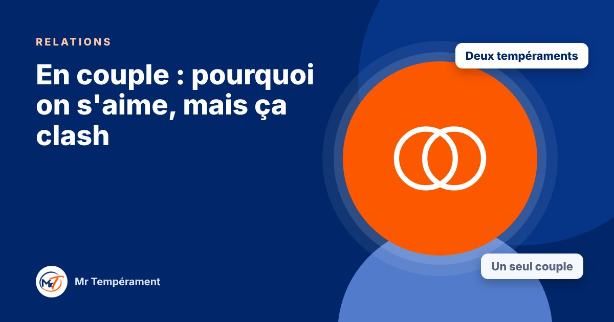

En couple : pourquoi on s'aime, mais ça clash

Deux personnes qui s'aiment peuvent se heurter sans cesse. Souvent, ce n'est pas un manque d'amour, mais deux tempéraments qui ne parlent pas la même langue.
« On s'aime, mais on se dispute toujours pour les mêmes choses. » C'est l'une des phrases les plus fréquentes dans un couple. L'amour est là, la volonté aussi, et pourtant les mêmes tensions reviennent. Une partie de l'explication tient à nos tempéraments : chacun réagit, communique et gère les désaccords à sa façon.
Deux manières de réagir au même événement
Prenons une soirée où le couple doit décider d'un projet. Le Dominant veut trancher tout de suite. L'Influent veut en parler avec enthousiasme. Le Stable veut que tout le monde soit d'accord. Le Consciencieux veut d'abord réunir les informations. Chacun a une bonne intention, mais ces quatre réflexes peuvent s'entrechoquer.
Ce qui est vécu comme de l'indifférence, de la pression ou de la lenteur est souvent juste une autre manière de faire.
Les frictions les plus fréquentes
Le Dominant qui décide vite peut donner à l'autre le sentiment de ne pas être écouté. L'Influent qui oublie un engagement peut paraître peu fiable. Le Stable qui se tait pour éviter le conflit peut laisser croire que tout va bien. Le Consciencieux qui corrige peut sembler critique.
Dans chaque cas, le comportement visible raconte une histoire que l'autre interprète à sa façon. L'interprétation est souvent plus douloureuse que le comportement lui-même.
Ce que chacun attend, sans toujours le dire
Le Dominant attend du respect et de l'efficacité. L'Influent attend de la chaleur et de la reconnaissance. Le Stable attend de la sécurité et de la douceur. Le Consciencieux attend de la justesse et du calme. Quand ces besoins ne sont pas satisfaits, la tension monte, même s'ils ne sont jamais nommés.
Connaître son besoin, et celui de l'autre, change la discussion : on cesse de se reprocher ce qu'on est, pour parler de ce dont on a besoin.
Trois habitudes qui apaisent
La première : demander avant de proposer. « Tu veux que je t'écoute ou que je t'aide ? » évite bien des malentendus. La deuxième : annoncer son mode de réaction. « J'ai besoin d'une heure pour réfléchir, je reviens » rassure. La troisième : se dire chaque semaine une chose qui va bien, avant de parler de ce qui va moins bien.
Ces gestes paraissent simples. Répétés, ils transforment la manière dont le couple traverse les désaccords.
Les différences ne sont pas un problème
Deux tempéraments différents ne signifient pas un couple voué aux conflits. Au contraire : ils se complètent. L'un décide, l'autre apaise, l'un réfléchit, l'autre met de la vie. Tout se joue dans la compréhension mutuelle.
Ce que décrit le DISC, ce sont des tendances, pas des verdicts. Cet article ne remplace pas l'accompagnement d'un professionnel si votre couple traverse une période difficile : dans ce cas, n'hésitez pas à demander un soutien adapté.
Pour aller plus loin
Le Bilan DISC 3 domaines, avec le trio Relations, explore votre tempérament dans votre couple, votre parentalité et vos relations sociales, avec une synthèse du trio.
Découvrir le trio Relations